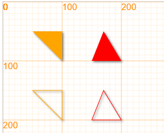

三角形 triangle¶
绘制方法¶
triangle(x1, y1, x2, y2, x3, y3, *color)
代码举例：
canvas.showAxis();
triangle(50, 50, 100, 50, 100, 100);
triangle(150, 100, 170, 50, 200, 100, 'red');
fill(false);
triangle(50, 150, 100, 150, 100, 200);
triangle(150, 200, 170, 150, 200, 200, 'red');

三角形对象 Triangle¶
const Triangle = Polygon;